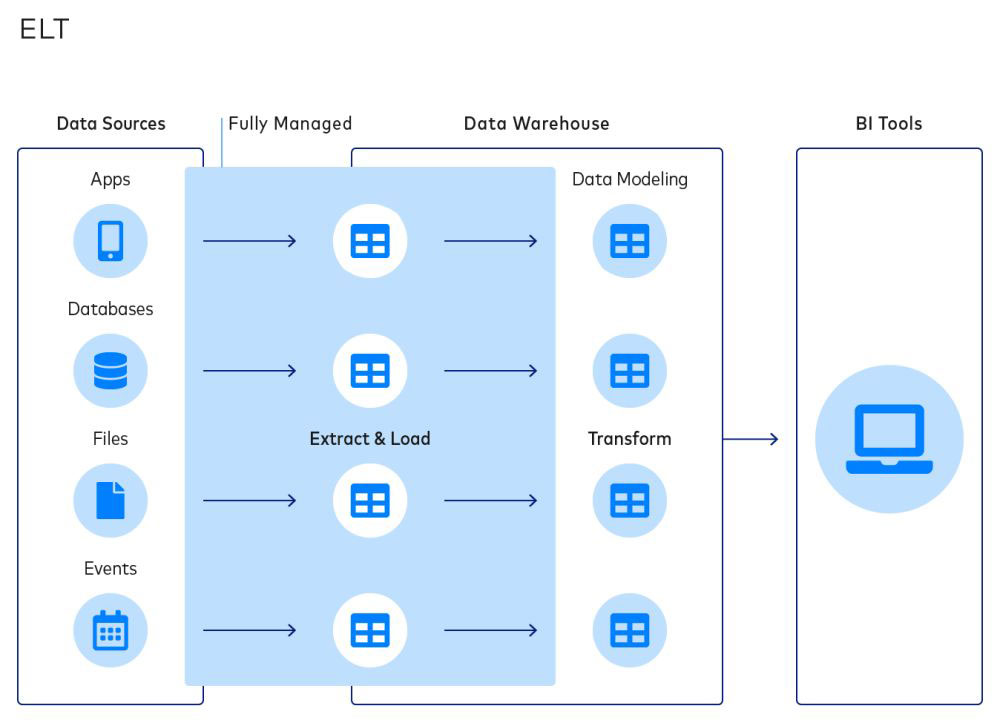

Soy Científico de Datos en formación con experiencia práctica en pipelines de datos, desarrollo de APIs RESTful y modelos de machine learning aplicados a escenarios reales. Me apasiona optimizar procesos mediante análisis inteligente y construir soluciones escalables. Actualmente profundizo en Python, SQL, Scikit-learn y herramientas de análisis avanzadas, buscando oportunidades para crecer en data science, data engineering y cloud computing.
El proyecto consiste en desarrollar un modelo que clasifique si un cliente de una empresa de telecomunicaciones va a darse de baja en el servicio
Ver en GitHub Ver másEste proyecto consiste unicamente en DBT y en una pipeline para crear Datamarts orientados a negocios especificos
Ver en GitHub Ver más
Este proyecto consiste en una pipe de datos donde se extraen peliculas con la API de TMDB, se procesan y almacenan en MySQL armando una base de datos personalizada
Ver en GitHub Ver másFeb 2023 – Mar 2024 | Presencial
Licenciatura en Ciencias de Datos – Universidad
Nacional de San Martín (UNSAM)
2024 – Actualidad